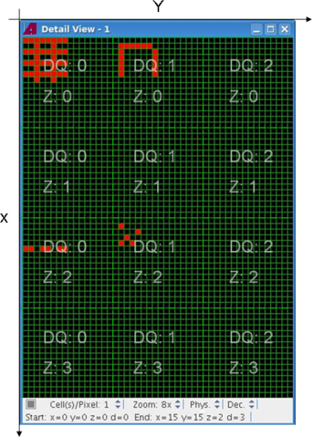

Memory test data log event structure
Memory test that are logged all create a similar event structure.
The exact sequence of events depends, among others, on the test functions used and the number of sites tested:
- Each execution of a memory test suite begins with a TestSuiteStartEvent and ends with a TestSuiteEndEvent.
Between these two events, there is one test function block for each tested site.
Note that this does not mean that sites are tested sequentially: Alls sites are tested in parallel; the results of sites other than the first are cached and the events are then generated from these cached results.
- A test function block begins with a TestFunctionStartEvent and
ends with a TestFunctionEndEvent.
Between these two events, there are the main label test result events, optionally followed by one or more subroutine test result events.
- Each main label test result consists of a pair of events:
- First the functional pass/fail result, a TestEvent with
TEST_TYPE_FUNCTIONAL as the value of the ParametricOrFunctionalTestAttrType parameter.
This event always contains the test name, test ID, test type, and pass/fail result.
If the per-pin on pass or per-pin on fail test suite flags, respectively, were set, the event also contains the list of passed and failed pins.
- Next the fail bit count (FBC) pass/fail results, a TestEvent with TEST_TYPE_MEMORY as the value of the ParametricOrFunctionalTestAttrType parameter.
- First the functional pass/fail result, a TestEvent with
TEST_TYPE_FUNCTIONAL as the value of the ParametricOrFunctionalTestAttrType parameter.
- Each subroutine test result consists of a pair of events:
- First the functional pass/fail result, a TestEvent with
TEST_TYPE_FUNCTIONAL as the value of the ParametricOrFunctionalTestAttrType parameter.
This event always contains the test name, test ID, test type, and pass/fail result.
If the per-pin on pass or per-pin on fail test suite flags, respectively, were set, the event also contains the list of passed and failed pins.
- Next the FBC and fail addresses results, a TestEvent with TEST_TYPE_MEMORY as the value of the ParametricOrFunctionalTestAttrType parameter.
- First the functional pass/fail result, a TestEvent with
TEST_TYPE_FUNCTIONAL as the value of the ParametricOrFunctionalTestAttrType parameter.
Syntax
This is the structure of the EDL events for memory test in pseudo-code:
TestSuiteStartEvent
TestFunctionStartEvent (site 1)
TestEvent (main label functional pass/fail results)
TestEvent (main label FBC pass/fail results)
optional TestEvent(subroutine 1 functional pass/fail results)
optional TestEvent(subroutine 1 FBC and fail addresses results)
...
optional TestEvent(subroutine n functional pass/fail results)
optional TestEvent(subroutine n FBC and fail addresses results)
TestFunctionEndEvent (site 1)
TestFunctionStartEvent (site 2)
...
TestFunctionEndEvent (site 2)
...
TestFunctionStartEvent (site n)
...
TestFunctionEndEvent (site n)
TestSuiteEndEventThese conditions apply:
- Events for passed tests are only created if the output on pass test suite flag is set; events for failed test are generated only if the output on fail flag is set.
- Subroutine events are only generated if subroutines exist.
- No events are generated for patterns based on parallel vectors.
- No memory test events are generated for patterns with no reconstruction data. Functional test events are still generated for such patterns.
- Events for FBC results are generated only if the fail_count_enabling parameter is set to YES.
Example
This example shows a possible result for a sample device with 3 x-, y-, and z-bits and three d-bits. It is assumed that the fail map (displaying physical addresses) looks like this:

The event log for the failed site 1 would look like this, assuming that the output on fail, per-pin on fail, and fail values flags are all on:
TestEventType with 5 attributes received
1 =>ParametricOrFunctionalTestAttrType received
1 =>Attribute type: 62
Test Type = 8 (TEST_TYPE_MEMORY)
2 =>TestNameAttrType received
2 =>Attribute type: 30
swr_b-mpc002_x6 : swr_bank-mpc002_x6@Port_DQ
3 =>TagAttrType received
3 =>Attribute type: 46
Tag name : PatternType
Tag value: Subroutine
4 =>PassFailResultAttrType received
4 =>Attribute type: 12
Result = FAIL ""
5 =>TestIdAttrType received
5 =>Attribute type: 22
Id = 2147483646
6 =>FailingAddressesCountAttrType received
6 =>Attribute type: 73
Global count = 67
Failing access count = 134
Result pin count = 3
Bank count = 4
Bank Specific Counts[0]:
Bank ID = 0
Failing address count = 56
Failing address limit = 10
Result = FAIL
Bank Specific Counts[1]:
Bank ID = 1
Failing address count = 0
Failing address limit = 10
Result = PASS
Bank Specific Counts[2]:
Bank ID = 2
Failing address count = 11
Failing address limit = 10
Result = FAIL
Bank Specific Counts[3]:
Bank ID = 3
Failing address count = 0
Failing address limit = 10
Result = PASS
Pin Specific Counts[0]:
Bit pos = 0
Pin index = 0
Pin name = DQ 0
Failing address count = 46
Failing address limit = 10
Result = FAIL
Pin Specific Counts[1]:
Bit pos = 1
Pin index = 0
Pin name = DQ 1
Failing address count = 21
Failing address limit = 10
Result = FAIL
Pin Specific Counts[2]:
Bit pos = 2
Pin index = 0
Pin name = DQ 2
Failing address count = 0
Failing address limit = 10
Result = PASS
7 =>Attribute type: 46
Tag name : BfdFileName
Tag value: 2010-11-17_13-27-36-455340- swr_bank-mpc002_x6@Port_DQ -Site1.bfd
8 =>TagAttrType received
8 =>PatternLabelAttrType received
8 =>Attribute type: 30
swr_bank-mpc002_x6
9 =>BitFailMapDescAttrType received
9 =>Attribute type: 30
DQ0,DQ1,DQ2
10 =>FailingAddressesAttrType received
10 =>Attribute type: 74
Failing Address Count = 67
Failing Access Count = 134
Result Pin Count = 3
x address count = 8
y address count = 8
z address count = 2
Pin Specific Addresses[0]:
Bit pos = 0
Pin index = 0
Pin name = DQ 0
Logged failing address count = 46
Logged failing addresses:
[0]: x = 0; y = 0; z = 0; expected data = 3
[1]: x = 0; y = 1; z = 0; expected data = 3
[2]: x = 0; y = 2; z = 0; expected data = 3
[3]: x = 0; y = 3; z = 0; expected data = 3
[4]: x = 0; y = 4; z = 0; expected data = 3
[5]: x = 0; y = 5; z = 0; expected data = 3
[6]: x = 0; y = 6; z = 0; expected data = 3
[7]: x = 0; y = 7; z = 0; expected data = 3
[8]: x = 1; y = 2; z = 0; expected data = 3
[9]: x = 1; y = 5; z = 0; expected data = 3
[10]: x = 2; y = 0; z = 0; expected data = 3
[11]: x = 2; y = 1; z = 0; expected data = 3
[12]: x = 2; y = 2; z = 0; expected data = 3
[13]: x = 2; y = 3; z = 0; expected data = 3
[14]: x = 2; y = 4; z = 0; expected data = 3
[15]: x = 2; y = 5; z = 0; expected data = 3
[16]: x = 2; y = 6; z = 0; expected data = 3
[17]: x = 2; y = 7; z = 0; expected data = 3
[18]: x = 3; y = 2; z = 0; expected data = 3
[19]: x = 3; y = 5; z = 0; expected data = 3
[20]: x = 4; y = 0; z = 0; expected data = 3
[21]: x = 4; y = 1; z = 0; expected data = 3
[22]: x = 4; y = 2; z = 0; expected data = 3
[23]: x = 4; y = 3; z = 0; expected data = 3
[24]: x = 4; y = 4; z = 0; expected data = 3
[25]: x = 4; y = 5; z = 0; expected data = 3
[26]: x = 4; y = 6; z = 0; expected data = 3
[27]: x = 4; y = 7; z = 0; expected data = 3
[28]: x = 5; y = 2; z = 0; expected data = 3
[29]: x = 5; y = 5; z = 0; expected data = 3
[30]: x = 6; y = 0; z = 0; expected data = 3
[31]: x = 6; y = 1; z = 0; expected data = 3
[32]: x = 6; y = 2; z = 0; expected data = 3
[33]: x = 6; y = 3; z = 0; expected data = 3
[34]: x = 6; y = 4; z = 0; expected data = 3
[35]: x = 6; y = 5; z = 0; expected data = 3
[36]: x = 6; y = 6; z = 0; expected data = 3
[37]: x = 6; y = 7; z = 0; expected data = 3
[38]: x = 7; y = 2; z = 0; expected data = 3
[39]: x = 7; y = 5; z = 0; expected data = 3
[40]: x = 5; y = 0; z = 2; expected data = 3
[41]: x = 5; y = 1; z = 2; expected data = 3
[42]: x = 5; y = 3; z = 2; expected data = 3
[43]: x = 5; y = 4; z = 2; expected data = 3
[44]: x = 5; y = 6; z = 2; expected data = 3
[45]: x = 5; y = 7; z = 2; expected data = 3
Pin Specific Addresses[1]:
Bit pos = 1
Pin index = 0
Pin name = DQ 1
Logged failing address count = 21
Logged failing addresses:
[0]: x = 1; y = 1; z = 0; expected data = 3
[1]: x = 1; y = 2; z = 0; expected data = 3
[2]: x = 1; y = 3; z = 0; expected data = 3
[3]: x = 1; y = 4; z = 0; expected data = 3
[4]: x = 1; y = 5; z = 0; expected data = 3
[5]: x = 1; y = 6; z = 0; expected data = 3
[6]: x = 2; y = 1; z = 0; expected data = 3
[7]: x = 2; y = 7; z = 0; expected data = 3
[8]: x = 3; y = 1; z = 0; expected data = 3
[9]: x = 3; y = 7; z = 0; expected data = 3
[10]: x = 4; y = 1; z = 0; expected data = 3
[11]: x = 4; y = 7; z = 0; expected data = 3
[12]: x = 5; y = 1; z = 0; expected data = 3
[13]: x = 5; y = 7; z = 0; expected data = 3
[14]: x = 6; y = 1; z = 0; expected data = 3
[15]: x = 6; y = 7; z = 0; expected data = 3
[16]: x = 1; y = 1; z = 2; expected data = 3
[17]: x = 2; y = 4; z = 2; expected data = 3
[18]: x = 3; y = 2; z = 2; expected data = 3
[19]: x = 4; y = 1; z = 2; expected data = 3
[20]: x = 4; y = 3; z = 2; expected data = 3
Pin Specific Addresses[2]:
Bit pos = 2
Pin index = 0
Pin name = DQ 2
Logged failing address count = 0
Logged failing addresses:Functional changes
- SmarTest 7.0.4: Logging memory tests events is available only in MTP on HSM.
- MTP 3.1.4: Logging memory tests events is available both in MTP on HSM and MTP on SOC.